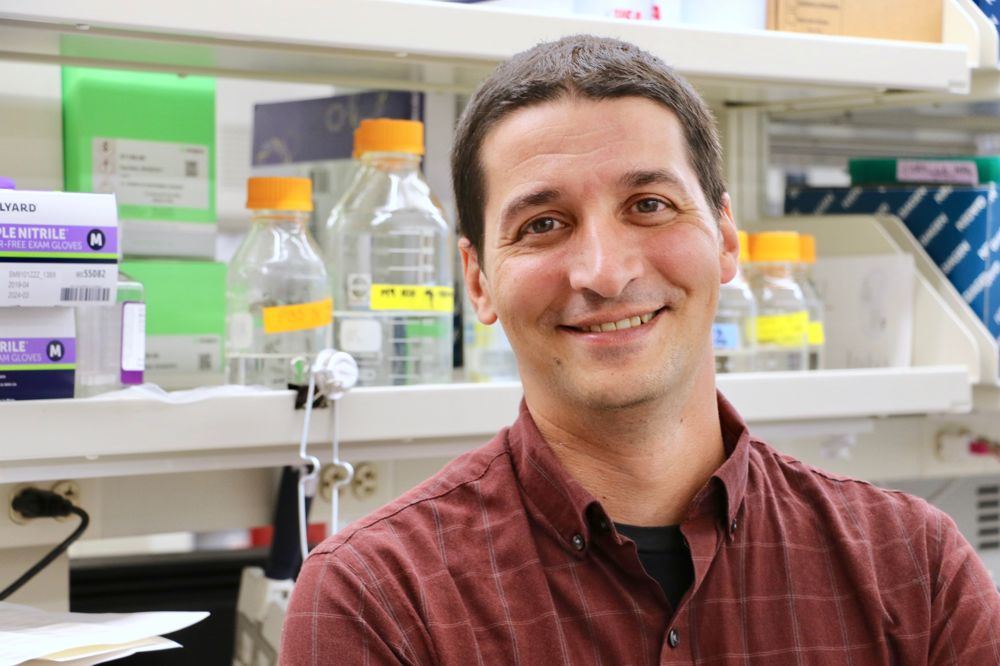
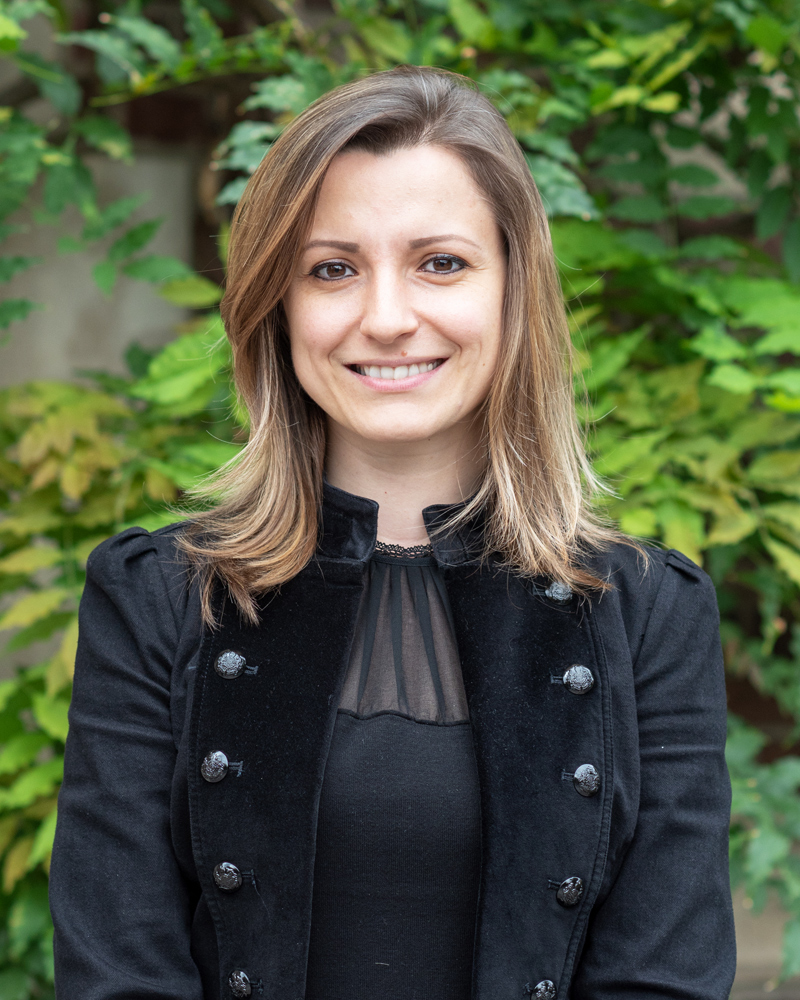
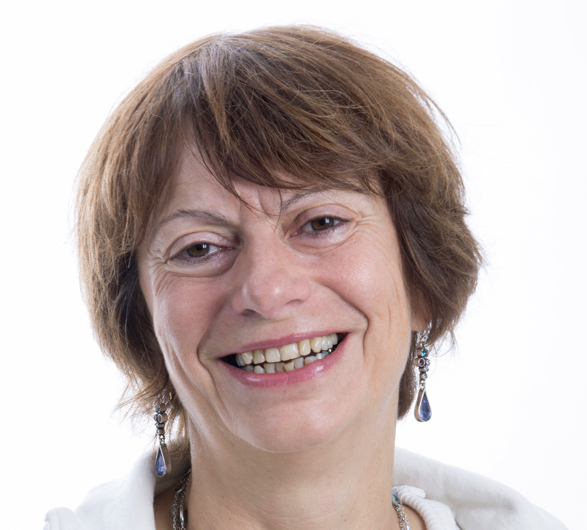
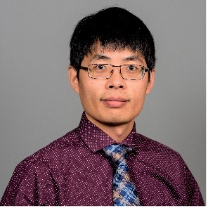

CELLS: Workshop on Computing among Cells
CELLS: Workshop on Computing among Cells
DISC
DISC
CELLS is a workshop co-hosted with DISC 2022. Please see the DISC page for further information. The workshop will be held in hybrid mode.
Scope
Scope
The workshop is intended to cover topics both from computer science and microbiology with a focus on computation emerging from microbiological units (bacteria, viruses, DNA, etc.) interacting with each other.
Topics include, but are not limited to: synthetic biology, bacterial computing, DNA computing, population protocols, Markov chains, modeling with cellular automata, infection models, and evolutionary models.
Program
Program
Talks will be held online on October 28th, 2022 (from 9 AM to 4 PM EDT).
Friday, October 28, 2022 (EDT times):
- 09:00 AM. Ross Jones
- 10:00 AM. Sylvie Méléard
- 11:00 AM. Alvaro Sanchez
- noon 2h break
- 02:00 PM. Xiaojun Tian
- 03:00 PM. Corina Tarnita
Registration
Registration
For a webcast link (free), register here: CELLS'22 YouTube Link Signup. To participate in the workshop, including Q/A and discussions, please register via the DISC'22 page.
Speakers
Speakers
The CELLS'22 speakers are (in alphabetical order):
 Alvaro Sanchez is a Tenured Group Leader at the National Center of Biotechnology (CNB) in Madrid, Spain. Prior to moving to Madrid, he spent six years first as an Assistant Professor and then Associate Professor of Ecology & Evolutionary Biology Yale University and a faculty member at the Microbial Sciences Institute. He has undergraduate and Master’s degrees in Physics from the Universidad Autónoma de Madrid (Spain) and the University of Minnesota, respectively, and a PhD in Biophysics & Structural Biology from Brandeis University. After completing his postdoctoral training at MIT, he spent three years as a Junior Fellow (group leader) at the Rowland Institute at Harvard University before joining Yale in 2016. The Sanchez lab seeks to predict how microbial communities form and evolve, and how they can be manipulated to serve useful purposes. To that end, the lab cultivates microbial communities in defined environments in high-throughput, and develops novel computational methods to model interactions between microbes and their environment.
Abstract. Microbial consortia provide myriad services in biotechnology, and learning how to engineer and optimize them is one of the main challenges of modern biotechnology. In this talk, I will overview approaches developed in my group that rely on exploring the relationship between the composition of these consortia and functions they provide, i.e. the community-function landscape. Our work seeks to place the goals of engineering biological function across scales, from the molecular to the organismal to the ecological, under a common theoretical and methodological framework that can lead to the flow of ideas and methodologies across them.
 Corina joined the Princeton faculty in February 2013. Previously she was a Junior Fellow at the Harvard Society of Fellows (2010-2012) and a postdoctoral researcher with the Program for Evolutionary Dynamics, Harvard University (2009-2010). She obtained her B.A.('06), M.A.('08) and PhD ('09) in Mathematics from Harvard University. She is an ESA Early Career Fellow, a Kavli Frontiers of Science Fellow of the National Academy of Sciences and an Alfred P. Sloan Research Fellow. Her work is centered around the emergence of complex behavior out of simple interactions, across spatial and temporal scales.
Abstract. Loners — individuals out of sync with a coordinated majority — occur frequently in nature, from microbial aggregates to locust swarms, from the wildebeest migration to bamboo flowering. But are loners incidental byproducts of large-scale coordination attempts, or are they part of a mosaic of life-history strategies? Microbes provide an opportunity to investigate this otherwise challenging question. I will show empirical evidence of naturally occurring heritable variation in loner behavior in the model social amoeba Dictyostelium discoideum. I will then present theoretical and empirical evidence to propose that Dictyostelium loners — cells that do not join the multicellular life stage — arise from a dynamic population-partitioning process, the result of each cell making a stochastic, signal-based decision. This imperfectly synchronized multicellular development is affected by both abiotic (environmental porosity) and biotic (signaling) factors. In D. discoideum, these findings suggest that loners could be critical to understanding collective and social behaviors, multicellular development, and ecological dynamics. More broadly, across taxa, these findings suggest that imperfect coordination of collective behaviors might be adaptive by enabling diversification of life-history strategies.
Ross Jones (University of British Columbia)
Ross Jones is a Postdoctoral Fellow in the School of Biomedical Engineering at the University of British Columbia, working under Peter Zandstra. Ross received a PhD in Biological Engineering from the Massachusetts Institute of Technology in 2020, working under both Domitilla Del Vecchio and Ron Weiss. He received a BS in Bioengineering from the University of Washington in 2014. Ross was awarded a Postdoctoral Fellowship from the Michael Smith Foundation for Health Research in 2021. His research focuses on developing robust methods to program the development and function of mammalian cells for applications in cell-based therapies.
Abstract. The ability to reliably engineer the mammalian cell will impact a variety of applications in a disruptive way, including cell fate control and reprogramming, targeted drug delivery, and regenerative medicine. However, our current ability to engineer mammalian genetic circuits that behave as predicted remains limited. These circuits depend on the intra and extra cellular environment in ways that are difficult to anticipate, and this fact often hampers genetic circuit performance. This lack of robustness to poorly known and often variable cellular environment is the subject of this talk. Specifically, I will describe control engineering approaches that make the performance of genetic devices robust to context. I will show a feedforward controller that makes gene expression robust to variability in cellular resources and, more generally, to changes in intra-cellular context linked to differences in cell type. I will then show a feedback controller that uses bacterial two component signaling systems to create a quasi-integral controller that makes the input/output response of a genetic device robust to a variety of perturbations that affect gene expression. These solutions support rational and modular design of sophisticated genetic circuits and can serve for engineering biological circuits that are more robust and predictable across changing contexts.
Sylvie Méléard (École polytechnique)
 Sylvie Méléard is full Professor at Ecole polytechnique. She is presently head of the Research Team PEIPS (Population Evolution and Interacting Particle Systems) and of the Chair « Mathematical Modeling and Biodiversity » (sponsorship between Ecole polytechnique, Museum national d’Histoire naturelle, Veolia). She has been pioneer in the interface non linear pdes/stochastics (Boltzmann equation, networks, SPDE) and has a leading role in the field of mathematical biology and stochastic modeling, emphasis on individual behaviors, feedbacks Ecology/Evolution and systematic study of various regimes depending on scale parameters. Her broad research interests focus on the mathematical modeling of adaptive biological phenomena in different scales. With N. Champagnat, a French researcher, she gave a rigorous mathematical framework to the theory of Adaptive Dynamics, from individuals to polymorphic evolutionary sequences and then to canonical equations. She emphasized the role of quasi-stationary distributions for population processes and their link with the approximating dynamical systems. Her current research interests are mainly the mathematical modeling of the effect of gene transfer in evolution and the mathematical modeling of cell differentiation and the emergence of myeloid neoplasms. She is PI of a ERC-advanced grant and of a ITMO Cancer grant.
Abstract. We present mathematical models that explain some biological data of cell differentiation.
The first model is based on in vivo murine experiments and focuses on hematopoietic stem and progenitor cells. We defined a 6-compartment model (5 compartments for immature cells and the red blood cell compartment), relevant from the point of view of mathematical analysis and from the point of view of observations. This model depends on the rates of differentiation and renewal in each of the 5 immature compartments, and the rate of death of red blood cells. We used the equilibrium data to fix the general shape of the model. Some phenylhydrazine was applied to mice. A reduced number of cells in each progenitor compartment was evidenced over the next 7 days by a drastic level of differentiation without proliferation, followed by a huge proliferative response in all compartments, including the long-term hematopoietic stem cells, before a return to normal levels. We used these biological data to model the effect of the different regulations. The rates depended on two regulators whose production and elimination dynamics depend on the number of cells in the 5 immature compartments. The resulting model was finely calibrated using a stochastic optimization algorithm. Thus calibrated, the model was able to reproduce the biological data in silico when applied to different stress conditions (bleeding, chemotherapy, HSC depletion).
The second model aims to explain the large fluctuations of red blood cells that are observed in a patient over time, without stress, and that cannot be explained by classical theorems of random fluctuations around a central tendency. We show how the multiscale aspect related to the size amplifications between the different compartments plays a fundamental role in these large variations.
 Dr. Xiaojun Tian received his Ph. D. degree in systems biology from Nanjing University in 2012 and then spent five years as a postdoctoral fellow at Virginia Tech and the University of Pittsburgh. In 2017, he joined the School of Biological and Health Systems Engineering at Arizona State University as Assistant Professor. His research interests are in employing quantitative experiments and mathematical modeling to understand fundamental problems in synthetic biology. His lab has made outstanding achievements with several publications in high-impact journals, such as Nature Chemical Biology, Nature Communications, and ACS synthetic biology. Dr. Tian has received two prestigious awards, NIH Maximizing Investigators' Research Award (MIRA) award and the NSF Career award.
Abstract. Failure of modularity remains a significant challenge for assembling synthetic gene circuits with tested modules as they often do not function as expected. Hidden circuit-host interactions, such as growth feedback and resource competition, could significantly impair intended circuit function but are often neglected. Here, I will present our recent efforts on the quantitative understanding of how the functional perturbation of gene circuits by these hidden interactions depends on network topology, host physiological environment, and resource competition, together with modeling frameworks for predicting circuit behaviors and practical control strategies for engineering robust gene circuits.
Committee
Committee
Matthias Függer, CNRS & LMF, ENS Paris-Saclay, Université Paris-Saclay & Inria
Manish Kushwaha, Micalis Institute, INRAE-AgroParisTech, Université Paris-Saclay
Thomas Nowak,
ENS Paris-Saclay